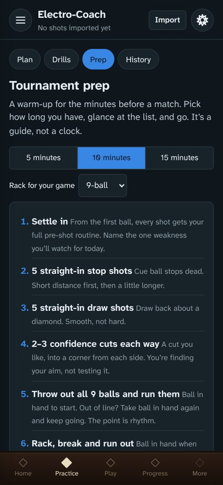

Structured practice, drills you log with a tap, stroke feedback from your drill results, a shot visualizer, a tournament shot clock and your own pre-shot routine, all in one app. Add your Railbird data and it shows exactly where you’re improving and what to practice next.
I love pool, and I built Electro-Coach to help me get better. I’m a scientist with a background in statistics, and it started as an analysis of my own Railbird data. I wanted to understand my strengths and weaknesses well enough to know what to practice. The numbers here are built the way I’d build them in my own work. Every shot is measured against its difficulty, and every result comes with a range that says how sure it is.
From there it grew into a structured practice plan that keeps me honest, with no shortcuts. And the more I use the app, the more it builds on the valuable data I already get from Railbird.
I added other things I like to have on hand, too: my pre-shot routine and a journal for practice sessions and competition days.
This is a labor of love and still a work in progress. I hope it helps you too.
— Lela
What it does
Everything works on its own. With Railbird shot data, the analysis and the practice plan come alive.
1
A plan for every session
A warm-up, a stroke drill, a named drill for the shots that cost you the most, and a progressive ghost to finish. Drills end at their count, not the clock, and the plan learns how long they really take you.
2
Drills you log with a tap
Stroke drills, cue ball control, position patterns and run-outs, each with a diagram and tip positions for the cue ball. A tap takes a second, so you log what matters without leaving the table or breaking your rhythm. Levels move up and down from your results.
3
Progressive ghost
Run-out practice for 8- or 9-ball, at your pace. Run a quick rack or keep going for hours, collecting data on how you play. The app tracks your break, where racks end, and how often the money ball is the miss. A separate run-out drill for 10-ball (10-ball bowling) is also provided.
4
Progress you can trust
Your recent play measured against a frozen yardstick of your own shot-making, so real improvement shows instead of getting lost in the mix of shots you happened to take.
5
Strengths, weaknesses and heat maps
How often you make each kind of shot against how often you should, a shot predictor, your best speeds, and heat maps of where you pot best on the table.
6
Your pre-shot routine
Written your way and always one tap away, with a home-screen widget on Android. Fully editable.
7
Match tools
A tournament-style shot clock with extensions, straight pool scoring under WPA or CSI rules, and your FargoRate tracked over time.
8
Tournament prep
A 5, 10 or 15-minute warm-up for the minutes before a match, adjusted to your game. Edit it to make it yours.
9
Journal
Notes on practice, equipment and competition days, lined up with your numbers, and easy to share with a coach.
10
Stroke check
Your drill taps add up. When misses lean one way, stop shots roll forward, draw dies at the rail or cuts run thick on one side, the Stroke check shows the pattern, how sure it is, likely causes, what to check and a drill to try. It also tells you whether a change to your stroke or equipment helped.
11
Shot visualizer
See a cut the way you see it from behind the cue ball: full, ¾, ½ and ¼ ball, at any angle. Or lay out a shot from above to see the ghost ball, the contact point, both ball paths and the parallel shift.
A look inside
HomePractice planProgressive ghostProgressStroke checkShot visualizerLay out a shotHeat mapShot clockPre-shot routine

Tournament prep
Better with Railbird
Railbird films your play and measures every shot. Electro-Coach works without it, but it’s at its best with it: your Railbird data powers the progress tracking, the practice plan, the heat maps and the speed profile. If you’re serious about getting better, a Railbird subscription is well worth it.
Railbird is a companion, not a chore
Film free play. Solo play gives the widest mix of shots, the ones you actually face. Then watch the recording for one thing in your mechanics to work on.
Film a drill now and then to fill gaps. Copy the drill’s Electro-Coach tag and add it as a tag on the Railbird session, so Electro-Coach knows which drill the shots belong to.
Film as often as you can, especially at first. The more you record in your first weeks with Railbird, the sooner your numbers come into focus. If one or two 20–30 minute recordings a week is what fits, that’s fine: the picture just sharpens a little more slowly.
One device is all you need. Film with Railbird in some sessions and tap drills in others. If you have a second phone or tablet, it can film while you tap on your main device, so you collect video and taps at the same time.
The browser warns the file might be harmful. Apps from outside the Play Store always get this warning. Choose to download or keep it anyway.
The download finished but tapping it does nothing. Open your Files app (or Downloads), find electro-coach.apk and tap it there.
Play Protect doesn’t recognize the developer. That’s because the app isn’t in the Play Store. Choose More details → Install anyway.
“App not installed”. Usually not enough free space. Don’t uninstall a working copy unless you’ve backed up: uninstalling erases the app’s data.
iPhone
On your iPhone, tap Install on iPhone below.
The app shows you how to add it to your Home Screen, step by step. It takes a minute. In DuckDuckGo or another browser that can’t do it, you’ll use Safari for that one step.
Open Electro-Coach from its new icon: your setup starts there. It runs full screen, works offline once loaded, and your data stays on the phone.
You keep using your usual browser for everything else.
The end of a timed practice block sounds only while the app is on screen: iPhone web apps can’t schedule alerts in the background. FargoRate search works in the Android app; on the web, enter your rating by hand.
Computer
Open the web app in Chrome, Edge or Safari.
Or download the single-file version and open it from your computer, no internet needed.
Electro-Coach is in active development. Here’s what each release brought, newest first.
0.1.61 ·
A clearer practice plan, a new run-out drill, and views to suit you
Every block in the practice plan now names the drill you’ll play, with the target it works on as a tag. When several drills fit a target they take turns, and you can swap to another.
Changing today’s session is easier: drag blocks to reorder them, find a drill by typing part of its name or category, and set counts and minutes with − and +. Your changes save as you go and wait for you until midnight.
Sessions are grouped into Warm-up, Target and Apply, and drills end at their count (makes, shots or racks), not the clock: the minutes are only an estimate from your own past sets.
Today and Progress are organized around questions: where you’re losing balls, left cuts against right by angle, and how your misses fall on each side. A Glance, Standard or Detail setting sets how much you see.
New drill, Last Three: the last three balls of a rack, where a miss sends you back to the start. Straight pool now offers WPA or CSI rules, with a short rules guide for each.
Two new questions in your player profile, “How do you like to practice?” and “Where do you compete?”, set where the app starts: how much each screen shows, and whether Today leads with short drills and warm-ups or with the practice plan.
The menu is reorganized: Play holds the 9-ball ghost, the 8-ball ghost and straight pool, and a new Tools section holds the shot clock and the shot visualizer.
Stroke check now notices when your makes drop late in long sessions, and when two patterns may be one problem. Progress points out a “cliff”, where cuts you make well at one angle turn into misses at the next.
On short filming days, filming shrinks so the target drill still fits. The terms of use and the privacy page now describe the paid version that’s on the way.
0.1.60 ·
A stroke check that reads one likely story
The stroke check now compares each lean on easier and firmer shots, reads the patterns together into one likely story with one focus, and tells you when your taps match a tendency you've noted in your player profile (Settings), along with the cue that helps.
Drill pages show what Railbird filmed: each set's speed, results by angle for the natural-roll cut ladder and side-pocket go / no-go, and Railbird's spin read for the center table and X drills.
Today now shows "Most improved" and, under your weekly goal, a bar graph of your days at the table over the last 12 weeks.
Coach reports include every tapped result by phase and the full stroke check, with tapped and Railbird data kept apart and labeled.
0.1.59 ·
Ghost drill scoreboards and clearer stop shots
Tap screens keep the count at the top, mirror sets switch sides after each make, and a stop shot now counts as stopped within one ball width.
The 8- and 9-ball ghost drills get a scoreboard with your level, run-out rate and recent racks, plus a breakdown of where your racks end.
The stroke check now flags draw-shot misses that go toward your cue-arm side on straight-in draws.
Anonymous usage counts are now a standard part of the app: a one-time notice explains them, and nothing is sent until you've seen it.
0.1.58 ·
The web version moves to electro-coach.com
The web version and website now live at electro-coach.com, and the old address shows a countdown to its closing date.
"Move my data" carries your shots, drill sets, settings and favorites straight to the new address, and asks before replacing anything already there.
On iPhone or iPad, or if the direct move can't connect, you can save a move file at the old address and restore it at the new one.
0.1.57 ·
Flexible session set-up, and English named by tip position
In session set-up you can change any block's drill and its options (level, speed, set size), add a block anywhere or repeat one, and pick drills from Suggested, Favorites and All drills.
Side spin is now called English and named for where the tip strikes the cue ball, with a small diagram, and your earlier taps keep their meaning.
Progressive deep draw now records English and which way misses went, and those taps feed the stroke check.
Each drill has its own Railbird tag with a note on what filming it adds, and Railbird sessions in the app link straight to the video.
0.1.56 ·
Safer file sharing and updates
The app now asks before importing a file shared to it, and only downloads updates from its own official releases.
The privacy notes now explain that Android's own backup may include the app's data in your Google account.
0.1.54–0.1.55 ·
Send feedback by email
Report a problem, Suggest an idea and Send a drill request now open an email draft in your own mail app, with your app version filled in.
On a device without a mail app, Copy the address gives you the feedback address instead.
The About page and the updated terms and privacy policy show the new feedback address.
0.1.52–0.1.53 ·
Updates move to the app's public home
Update checks, downloads and feedback now come from the same public home as the website, and updates still install over your current version and keep your data.
0.1.51 ·
Quicker X drill practice and a delicate speed band
You can practice one part of the X drill on its own, without it affecting your level.
The speed profile adds a delicate speed band (1.5–3 mph) alongside easy, firm and hard.
The About page has a fuller "Why I built it".
0.1.50 ·
Smoother navigation, and better on iPhone
Saving your profile takes you back to Today, and the settings button returns you to where you were.
The shot clock's sounds now play on an iPhone with the silent switch on, and iPhones and iPads are named correctly in the app.
0.1.49 ·
A guided install on iPhone
Opened in Safari on an iPhone or iPad, the app now shows how to add it to your Home Screen before first-time setup, so your setup stays with the app.
0.1.48 ·
Today: a weekly goal, personal bests and what's next
The home screen becomes Today, with a weekly goal and a checklist for your first week.
A pop-up marks each new personal best, and Progress leads with your bests and milestones.
After each set or rack, a "What's next" line tells you how many good results in a row would move you up a level.
The shot visualizer adds a view from behind the cue ball.
0.1.47 ·
Shot visualizer and a first stroke check
The new shot visualizer shows the cue ball over the object ball at contact for any cut angle, or lets you place both balls from above to see the ghost ball, both paths and the cut angle.
A new stroke check reads your recent taps for leans in your stroke, with an early read after 8 taps and a clear pattern once the numbers support it.
Natural-roll drills get cue tip diagrams, result lines read more clearly, and the menu is tidier.
0.1.46 ·
Favorite drills and drills picked for you
Mark drills as favorites, and "Drills for you" suggests up to three: drills for your top practice targets and a tapped drill you haven't done in a while.
The Spot shot challenge is timed and keeps your best times.
Sessions can include Stun and Follow blocks, and the ghost drills give you ball in hand for your first shot after the break.
The About page adds "What this app is not".
0.1.45 ·
Cue tip diagrams and one-tap session start
Drill pages show cue tip diagrams for where to strike the cue ball, and tap buttons work the same way across drills.
Start your next planned session with one tap.
New: a Stop shots with spin drill, plus set sizes for the X drill and stun test.
Your profile now helps you find your vision center, the point on your face that sits over the cue.
0.1.44 ·
Spot shot diagrams and a summary-first coach report
Spot shots get a cue tip diagram, and you can choose which side to start the Spot shot challenge from.
You can change sides in the L drill.
The coach report now opens with a summary.
Notifications show the app's icon.
0.1.43 ·
Three new drills and tap statistics for coaches
New drills: Progressive deep draw, the Spot shot challenge, and the Progressive L drill (7, 11 or 15 balls) with its own levels.
You can tap a scooped cue ball, which counts as a miss because it's a stroke fault.
Coach summaries now include statistics from your taps, with plain-language findings only where the data clearly supports them.
Search finds sections inside pages, and the strengths chart shows finer detail.
0.1.42 ·
The web version keeps itself current
The web version loads the newest version whenever you open it online and lets you know when it has updated.
Run-out drills can record the table and pocket size, and sideways scrolling on iPhone is fixed.
0.1.41 ·
Your own pre-shot routine, or the default
Switch between the built-in pre-shot routine and your personal version with your edits.
The ghost drills let you record a scratch on the last ball, and your dominant eye can be set to "Don't know".
0.1.40 ·
A tidier menu
The menu folds into groups without subtitles, with Feedback under Data and settings, and the update prompt is shorter.
0.1.38–0.1.39 ·
Progressive ghost: paced for a workout
The progressive ghost drills now fit 20–40 minutes in a workout and focus on 8-ball and 9-ball.
0.1.37 ·
Filming guidance for new Railbird users
New Railbird users get guidance on how much to film: free play as often as you can at first, and a drill's tag added whenever you film it.
The 10-ball bowling drill tells you how much time to set aside.
0.1.36 ·
Sessions with a typical shape, plus terms and privacy
Planned sessions follow a typical shape: a short warm-up, a stroke drill, then the rest of your plan.
A 10-ball progressive ghost joins the 8- and 9-ball versions.
The terms of use and privacy policy are in the app, with links to the website.
0.1.35 ·
Progressive ghost drills, tournament prep and a player profile
New 8- and 9-ball progressive ghost drills: break, run the level's number of balls in order, and move up at 80% run-outs or down below 60%.
Tournament prep gives you a 5-, 10- or 15-minute warm-up checklist for the minutes before a match.
A player profile, asked once at setup and editable in Settings, records your shooting hand and dominant eye.
Home measures your recent play over the last 90 days by default.
0.1.34 ·
Filmed free play in your sessions
Filming sessions now include a block of solo free play right after the warm-up, with a reminder to watch the video for one thing in your mechanics.
The app recommends Railbird for shot tracking and poolbilliards.co for drills, and explains how each fits in.
The shot clock page scrolls so the player buttons fill the screen, and smaller security fixes are included.
0.1.33 ·
A fairer yardstick for your progress
By default your yardstick now covers everything before your recent play (the last 30 days, or your latest 100+ shots), so improvement shows instead of being absorbed.
0.1.31–0.1.32 ·
Update fixes and install help
The update pop-up now offers the right version, and "Later" applies only to the version on offer.
The download page has help for a first install that gets stuck.
0.1.30 ·
The app now updates itself
When a new version is out, a pop-up shows what's new, and Update now downloads and installs it inside the app while keeping your data.
The shot clock's Reset button moved to the top right, set apart so it isn't hit by accident.
0.1.29 ·
Shot clock reset
The shot clock has a Reset button (Undo brings back where you were), and a clock left unused for half an hour opens fresh.
0.1.28 ·
Daily FargoRate check
Once you've linked your FargoRate, the app checks your rating at most once a day and, on Android, lets you know when it changes.
The About page adds "Why I built it".
0.1.27 ·
A shorter morning recap
The morning recap now fits at a glance: the day's make rate, one thing that went well and what you're working on.
Add the pre-shot routine widget straight from the routine page with Add to home screen.
0.1.26 ·
Back gesture, WPBA shot clock and ball-path diagrams
The Android back gesture returns to the previous screen.
The shot clock adds WPBA rules.
Drill diagrams show the aim line, object-ball paths and the cue ball's path, colored for follow and draw.
A Feedback and drill requests page lets you report problems, share ideas and ask for drills.
0.1.25 ·
Your pre-shot routine on your home screen
On Android, a home-screen widget shows your pre-shot routine's quick card and full notes, and updates whenever you edit them.
0.1.24 ·
Sessions built around your stroke
Every session opens with stroke drills chosen for your player stage and levels, then your plan's targets, then a run-out.
Block times adapt to how long each drill actually takes you, and tapped drills run until you finish them by default.
Filming is limited to the number of sessions a week you choose; the rest of practice is tapped.
The session review offers a Tournament warm-up and a Stroke workout.
0.1.23 ·
Basic stop and draw shots, thin cuts and player stage
New Basic stop shots, Basic draw shots and Thin cuts 1 and 2 drills, with feedback on what your misses and drifts mean.
Set your player stage (New, Developing or Advanced) in Settings so the practice plan picks the right warm-ups.
0.1.22 ·
Progressive stroke drills
New stroke drills: the X-drill, Mid-table stop shots, and Center table follow and draw, each with three levels set by cue ball distance.
Your level moves up after two strong sets in a row and down after two weak ones, and you can always set it yourself.
0.1.21 ·
A tournament-style shot clock
The shot clock follows Matchroom rules by default, with Predator Pro Billiard Series and custom rules available.
It handles push outs and pass backs, gives each player their own extension button, and uses large, color-coded controls you can read at arm's length.
Audio cues count down the last seconds of each shot.
0.1.20 ·
Update check and About page
The Android app checks for new versions and offers Download, Not now or Skip this version.
The About page shows your version, a Check for updates button, feedback options and a privacy summary.
0.1.19 ·
Anonymous usage counts
The app counts which screens and features get used, with a note on first launch and a switch in Settings, and never sends anything you enter.
0.1.18 ·
10-ball bowling joins the drills
The 10-ball bowling drill moves under Practice as a run-out drill, with its own section in the drill library.
0.1.17 ·
Share Railbird exports to the app, and practice reminders
On Android, share a Railbird CSV export to Electro-Coach and it imports at once.
Optional reminders nudge you after 3 and 7 days without practice, and a morning recap sums up your last practice day.
0.1.16 ·
The first numbered release
Electro-Coach runs timed practice sessions, logs drills with a tap, scores straight pool and the 10-ball bowling drill, and keeps a shot clock, a journal and your pre-shot routine.
With Railbird exports it shows your progress against a yardstick, a practice plan ranked by makes lost, table heat maps, a speed profile and your most reliable shots.
It also tracks your FargoRate, keeps a Resources page, and runs on Android, on iPhone and on computers.
Railbird is optional, and the import page explains what it adds.
Looking for more drills? poolbilliards.co has one of the richest drill libraries there is.
Your data stays yours
There’s no account. Everything you enter stays on your device, and backups are files you keep. Anonymous usage counts come with the free version (they’ll be optional in the paid version), never include anything you enter, and are never sold.
Problems, ideas and drill requests all shape what comes next: use Feedback and drill requests in the app, or email feedback@electro-coach.com.
Free now, a paid version coming. Electro-Coach is free while it’s being built. A paid version will start with a free trial of the whole app; after that, some features will need a subscription. What you’ve recorded stays yours either way.